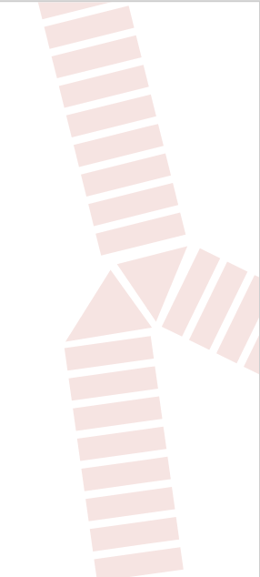
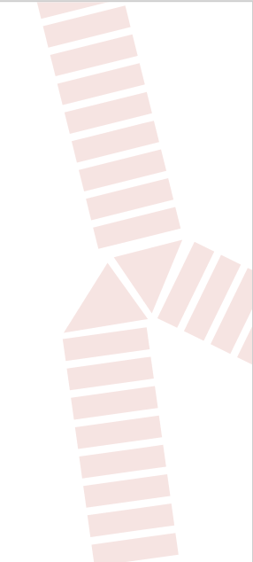

Visit
Brabrand
The best place in Aarhus!
Go for a walk
The Spiral
The Spiral is a gentle rise in the landscape, likely covered in green grass and dotted with small trees or bushes. It may be a popular destination for local residents to enjoy scenic views of the surrounding countryside or for outdoor recreational activities like picnicking or hiking. We highly recommend this place even for non-hikers.
Read moreSkjoldhøj Stonehenge
Skjoldhøj Stonehenge is a serene and tranquil location surrounded by tall trees, lush vegetation, and the sounds of nature. It may feature a clear pond, a babbling stream, or a meadow filled with wildflowers. This peaceful haven provides a respite from the outside world and offers an opportunity to connect with nature and find inner calm.
Read moreHolmstruphøjvej sø
Holmstruphøjvej sø is a body of still water surrounded by green forests, rolling hills, or sandy beaches. It may be a popular destination for boating or swimming, with scenic walking paths and picnic areas along its shores. The tranquil waters reflect the surrounding landscape and provide a peaceful escape from the hustle of urban life.
Read more